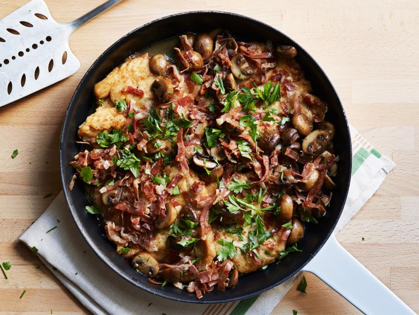

Logo
Home
(current)
video
Healthy
Recipes
Shop
Chicken Marsala
For an Italian favorite, try Tyler Florence's Chicken Marsala recipe.

nutrition per serving
Calories
Fat
Saturates
Sugar
Salt
Protien
Carbs
Fibre
275
14%
13.8g
20%
6g
30%
4.6g
5%
1.2g
20%
31.9g
64%
6.1g
2%
0.1g
~